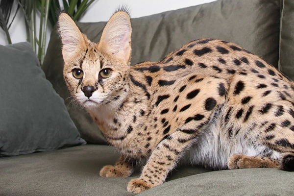
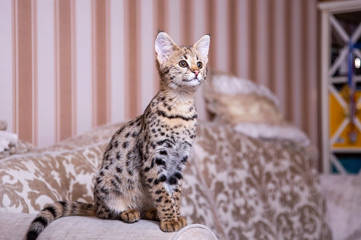
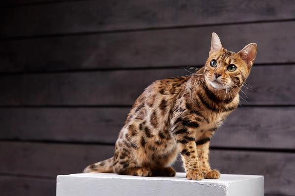
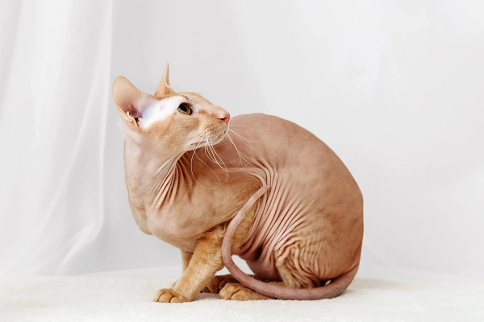

1. Ашера
Перше місце у списку найдорожчих порід кішок займає ашера, вартість якої може доходити до $125 тис. Це надзвичайно рідкісна порода, заводчик у Лос-Анджелесі щорічно пропонує всього п'ять кошенят цього типу, навела дані експерт FinancesOnline Астрід Ейра. У перерахунку на російські гроші з урахуванням коливань курсу на сьогоднішній день це близько 12 млн. руб. За такі гроші, наприклад, можна купити невелику однокімнатну квартиру в Москві, наводить варіанти сайт "Ціан".
2. Саванна
На другому місці розташувалася кішка породи савана - її вартість сягає $50 тис. (трохи менше 5 млн руб.). За таку суму можна купити двокімнатну хрущовку в центрі Самари, за даними порталу «Яндекс. Нерухомість».
3. Бенгальська кішка
Верхній поріг вартості бенгальської кішки експерт позначила цифрою $25 тис., це в перерахунку на російські гроші близько 2,5 млн. руб. За стільки можна купити новий вітчизняний чи китайський автомобіль. Породу було виведено шляхом схрещування домашнього кота та азіатської леопардової кішки. Бенгали мають унікальне мармурове забарвлення і яскраві смужки, що робить їх зовнішність дуже ефектною. Ціна кішок цієї породи варіюється в залежності від родоводу та забарвлення.
4. Перська кішка
Походження породи відносять до Персії XIX століття (сучасний Іран), але насправді вона існувала за сотні років до нашої ери. Кішки цієї породи відрізняються великими виразними очима та розкішною довгою шерстю різного забарвлення. Вони мають м'який характер, дуже грайливі і легко адаптуються в будинку, люблять своїх господарів. Однак «перси» потребують ретельного догляду за вовною, яка може сплутуватися та збиватися у ковтуни. Вартість кішки перської породи може досягати $5,5 тис., а це за поточним курсом – понад 0,5 млн руб. Приблизно в таку суму може обійтися , наприклад, купівля швейцарського годинника марки «Консул».
5. Петерболд
Цю породу також називають петербурзьким сфінксом, вивели в Росії. Представники цієї породи активні і легко ладнають з іншими тваринами. Кіт прив'язується до господаря і готовий слідувати за людиною будь-куди. Зовнішність кота цієї породи відрізняє витончений елегантний корпус, великі вуха і східний розріз очей. Петерболд уміє утримувати лапами предмети та відчиняти двері. З'явилася ця порода внаслідок схрещування донського сфінкса та орієнтальної короткошерстої кішки. Як і всі голі кішки, петерболди коштують недешево. Ціна особин з гарним родоводом позначається експертами до $5 тис. (трохи менше 0,5 млн руб. на сьогоднішній день) — як дорогий годинник або преміальна ювелірна прикраса.